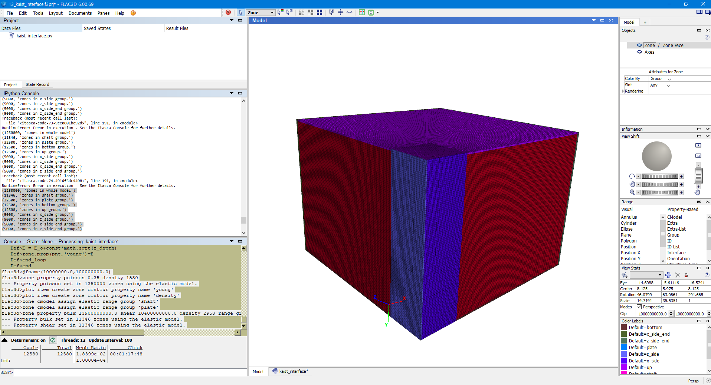

1 KAIST Model
1.1 Initial Configuration

import itasca as it
import numpy as np
np.set_printoptions(threshold=20)
it.command("python-reset-state false")
from itasca import zonearray as za
from itasca import gridpointarray as gpa
# PARAMETERS #
# Physical Constants
_gravity = 9.80665
_K = 0.4286
# Dimensions
_D_shaft = 1
_H_shaft = 7.45
_T_plate = 1.5
_B_footing = 3.25
_D_footing = _H_shaft + _T_plate
_B_soil = _B_footing*5
_D_soil = _D_footing+3
# Mesh Details
_radial = 50
_perimeter = _radial
_axial = 2*_radial
_outer = 2*_radial
# Concrete Properties
_bulk = 13.9e9
_shear = 10.4e9
_density_concrete = 2950
# Soil Properties
_E_o = 1e7
_const = 1e8
_poisson = 0.25
_density_soil = 1530
# Interface Properties
_stiff_norm = 1e8
_stiff_shear = 1e81.2 Zones

# ZONE #
it.command("""
; ==================================================================
; Simulation of Pull-out for Shallow Foundation
; ==================================================================
model new
fish automatic-create off
[global t = 'Pull-out for Spread Foundation ']
[t += {name}]
model title [t]
""".format(name="(B=6.5m, D=7.45m, Dr=78%)"))
command_zone = """
model new
z crea r-t p 0 (0,0,0) ...
p 1 ({B_soil},0,0) ...
p 2 (0,{D_soil},0) ...
p 3 (0,0,{B_soil}) ...
p 4 ({B_soil},{D_soil},0) ...
p 5 (0,{D_soil},{B_soil}) ...
p 6 ({B_soil},0,{B_soil}) ...
p 7 ({B_soil},{D_soil},{B_soil}) ...
p 8 ({B_footing},0,0) ...
p 9 (0,0,{B_footing}) ...
p 10 ({B_footing},{D_soil},0) ...
p 11 (0,{D_soil},{B_footing}) ...
p 12 ({B_footing},0,{B_footing}) ...
p 13 ({B_footing},{D_soil},{B_footing}) ...
size {radial} {axial} {perimeter} {outer} ...
rat 1 1 1 1.01 ...
fill
"""
command = command_zone.format(
B_footing = _B_footing,
B_soil = _B_soil,
D_soil = _D_soil,
radial=_radial,
axial = _axial,
perimeter = _perimeter,
outer = _outer)
it.command(command)

1.3 Constitutive Model
It is easy to loop over sets of model objects (i.e., zones, gridpoints, structural element nodes, etc.) using the loop foreach construct. In this case, a container of objects must be given by a FISH intrinsic such as zone.list. A practical use of the loop foreach construct is to install a nonlinear initial distribution of elastic moduli in a FLAC3D grid. Suppose that the Young’s modulus at a site is given by this equation:
\[ E = E_0 + c \sqrt{z} \] where z is the depth below surface, and c and E∘ are constants. We write a FISH function to install appropriate values of bulk and shear modulus in the grid, as in this example:
# CONSTITUTIVE MODEL
it.command("""
zone cmodel assign elastic range group "Radial Tunnel1"
fish define fname(E_o,const)
loop foreach pnt zone.list
z_depth = zone.pos.y(pnt)
E = E_o+const*math.sqrt(z_depth)
zone.prop(pnt,'young')=E
end_loop
end
@fname({E_o_},{const_})
zone property poisson {poisson_} density {density_soil}
plot item create zone contour property name 'young'
plot item create zone contour property name 'density'
""".format(E_o_=_E_o,const_=_const,poisson_=_poisson,density_soil=_density_soil))
# GROUP #
p = za.pos()
x,y,z = p.T
print(it.zone.count(), "zones in whole model")
shaft = reduce(np.logical_and, (np.sqrt(x**2+z**2)<_D_shaft, y<_H_shaft))
za.set_group(shaft, "shaft") # set the zones with shaft = true have "shaft" and "geometry"
print(za.in_group("shaft").sum(), "zones in shaft group.") #output how many zones are in the corner group
plate = reduce(np.logical_and, (x<_B_footing,z<_B_footing, y>_H_shaft,y<_D_footing))
za.set_group(plate, "plate")
print(za.in_group("plate").sum(), "zones in plate group.")
it.command("""
zone cmodel assign elastic range group 'shaft'
zone cmodel assign elastic range group 'plate'
zone property bulk {bulk_} shear {shear_} density {density_} range group 'shaft'
zone property bulk {bulk_} shear {shear_} density {density_} range group 'plate'
""".format(bulk_=_bulk,shear_=_shear,density_=_density_concrete))Again, you can verify correct operation of the function by printing or plotting shear and bulk moduli.
In the function install, the loop takes place over all zones in the global list of zones. The FISH statement loop foreach is a variation of the loop statement that sets pnt to each zone in zone.list. Inside the loop, the y-coordinate of each zone centroid is used to calculate the Young’s modulus, given in the equation above. We assume that the datum (or ground surface reference point) is at y = 0. The variables zone.pos.y(pnt) and zone.prop(pnt, ‘young’) are zone intrinsics. (Recall that we talked about the gridpoint intrinsic gp.force.unbal earlier.)
Here, we set properties directly from within a FISH function, rather than with a zone property command as in an earlier example.

Strain softening Model is also available, but not implemented:

# SOFTENING MODEL #
#it.command("""
#zone cmodel assign strain-softening range group "Radial Tunnel1"
#zone property density 2500 bulk 2e8 shear 1e8 range group "Radial Tunnel1"
#zone property cohesion 2e6 friction 45 tension 2e5 dilation 10 range group "Radial Tunnel1"
#zone property table-friction 'fri' table-cohesion 'coh' table-dilation 'dil' range group "Radial Tunnel1"
#table 'fri' add (0, 45) (.05, 42) (.1, 40) (1, 40)
#table 'coh' add (0,2e6) (.05,1e6) (.1,5e5) (1,5e5)
#table 'dil' add (0, 10) (.05, 3) (.1, 0)
#""")1.4 Soil-Structure Interface

Each interface element distributes its area to its nodes in a weighted fashion. Each interface node has an associated representative area. The entire interface is thus divided into active interface nodes representing the total area of the interface. Figure 1 illustrates the relation between interface elements and interface nodes, and the representative area associated with an individual node.
# INTERFACE #
it.command("""
zone interface 'interface 1' create by-face separate range group 'plate' group 'Radial Tunnel1'
zone interface 'interface 1' node property stiffness-normal {stiff_norm_} stiffness-shear {stiff_shear_} friction 20 cohesion 30000
zone interface 'interface 2' create by-face separate range group 'shaft' group 'Radial Tunnel1'
zone interface 'interface 2' node property stiffness-normal {stiff_norm_} stiffness-shear {stiff_shear_} friction 20 cohesion 30000
""".format(stiff_norm_=_stiff_norm, stiff_shear_=_stiff_shear))
1.5 Boundary Conditions
bottom = (y ==np.amax(y))
za.set_group(bottom, "bottom")
print(za.in_group("bottom").sum(), "zones in bottom group.")
up = (y == np.amin(y))
za.set_group(up, "up")
print(za.in_group("up").sum(), "zones in up group.")
x_side = (z <= np.amin(z)+1e-4)
za.set_group(x_side, "x_side")
print(za.in_group("x_side").sum(), "zones in x_side group.")
z_side = (x <= np.amin(x)+1e-4)
za.set_group(z_side, "z_side")
print(za.in_group("z_side").sum(), "zones in z_side group.")
x_side_end = (z == np.amax(z))
za.set_group(x_side_end, "x_side_end")
print(za.in_group("x_side_end").sum(), "zones in x_side_end group.")
z_side_end = (x == np.amax(x))
za.set_group(z_side_end, "z_side_end")
print(za.in_group("z_side_end").sum(), "zones in z_side_end group.") 1.6 Initial Equilibrium

it.command("""
zone face apply velocity-normal 0 range group 'bottom'
zone face apply velocity-normal 0 range group 'x_side' or 'z_side'
zone face apply velocity-normal 0 range group 'x_side_end' or 'z_side_end'
model gravity 0 {gravity_} 0
zone initialize-stress ratio {K_}
zone interface 'interface 1' node initialize-stresses
zone interface 'interface 2' node initialize-stresses
""".format(gravity_=_gravity, K_ = _K))
# INITIAL EQUILIBRIUM #
it.command("""
zone ratio local
model solve ratio 1e-4
model save 'initial'
""")###Vertical Loading
# VERTICAL LOADING #
top = reduce(np.logical_and, (np.sqrt(x**2+z**2)<_D_shaft, y==np.amin(y)))
za.set_group(top, "top") # set the zones with shaft = true have "shaft" and "geometry"
it.command("""
zone initialize state 0
zone gridpoint initialize displacement (0,0,0)
zone gridpoint initialize velocity (0,0,0)
table 'ramp' add ([global.step],0) ([global.step+30000],-5e-8) ...
([global.step+58000],-5e-8) ; Increase velocity applied to pile
; over 30,000 steps
zone face apply velocity-normal 1 table 'ramp' range group 'top'
history interval 250
zone history name 'disp' displacement-y position (0,0,0)
; =========================================================
; find gridpoints at pile cap, store in map called cap
fish define find_cap
global cap = map
loop foreach local gp gp.list
if gp.isgroup(gp,'top') then
cap(gp.id(gp)) = gp
endif
endloop
end
@find_cap
; monitor vertical loading at pile cap
fish define vert_load
local zftot = 0.0
loop foreach gp cap
zftot = zftot + gp.force.unbal.y(gp)
end_loop
vert_load = zftot / (0.25*0.5*0.5*math.pi)
end
;call 'load'
; =========================================================
fish history name 'load' @vert_load
zone mechanical damping combined
model step 58000
model save 'vertical-loading'
""")1.7 Data Analytics
; Calculate PY Curves at equidistant locations along pile
;
; Stored in map called pile, key = 10*z positions rounded to integer
; value = map, key 'z' = z-position
; 'length' = length of ownership of this segment
; 'gp' = Gridpoint nearest (0,0,z)
; 'nodes' = map of interface nodes at that position, key order entered.
fish define make_pydata
global pile = map
; Build list of nodes
loop foreach local ipnt inter.list
loop foreach node inter.node.list(ipnt)
local z = inter.node.pos.z(node)
local key = math.round(inter.node.pos.z(node) * 10.0)
if map.has(pile,key) == false then
local level = map
local nodes = map
level('z') = z
level('gp') = gp.near(0,0,z,'pile')
level('nodes') = nodes
level('length') = 0.0
pile(key) = level
endif
level = pile(key)
nodes = level('nodes')
nodes(map.size(nodes)) = node
level('nodes') = nodes
pile(key) = level
end_loop
end_loop
; Calculate length of ownership of each segment
local prev_key = '0'
loop foreach key map.keys(pile)
if type.name(prev_key) == 'integer' then
local levelp = pile(prev_key)
local leveln = pile(key)
local dist = math.abs(gp.pos.z(levelp('gp')) - gp.pos.z(leveln('gp'))) * 0.5
levelp('length') = levelp('length') + dist
leveln('length') = leveln('length') + dist
pile(prev_key) = levelp
pile(key) = leveln
endif
prev_key = key
end_loop
end
;
; Output resulting data structure...
fish define output_structure
loop foreach local level pile
io.out('Z-Position ' + string(level('z')))
io.out('Length ' + string(level('length')))
io.out('Gp ' + string(gp.id(level('gp'))))
local nodelist = ''
loop foreach local node level('nodes')
nodelist = nodelist + ' ' + string(interface.node.id(node))
end_loop
io.out('Nodes'+nodelist)
end_loop
end
fish define tot_reac
local total = 0.0
loop foreach local key map.keys(pile)
local level = pile(key)
local accum = 0.0
loop foreach local node level('nodes')
local area = 2.0 * interface.node.area(node)
local norm = zone.face.normal(inter.node.target.zone(node),inter.node.target.face(node))
local xnstress = inter.node.stress.normal(node) * norm->x * -1.0
local xsstress = inter.node.stress.shear.x(node)
accum = accum + (xnstress + xsstress) * area
end_loop
local xdis = gp.disp.x(level('gp'))
total = total + accum
table(string(key),xdis) = accum/level('length')
end_loop
tot_reac = total
end1.8 Results
; ==================================================================
; IPython Consol Output
; ==================================================================
(1250000, 'zones in whole model')
(11346, 'zones in shaft group.')
(32500, 'zones in plate group.')
(12500, 'zones in bottom group.')
(12500, 'zones in up group.')
(5000, 'zones in x_side group.')
(5000, 'zones in z_side group.')
(5000, 'zones in x_side_end group.')
(5000, 'zones in z_side_end group.')
; ==================================================================
; FISH Consol Output
; ==================================================================
flac3d>@fname(10000000.0,100000000.0)
flac3d>zone property poisson 0.25 density 1530
--- Property poisson set in 1250000 zones using the elastic model.
flac3d>plot item create zone contour property name 'young'
flac3d>plot item create zone contour property name 'density'
flac3d>zone cmodel assign elastic range group 'shaft'
flac3d>zone cmodel assign elastic range group 'plate'
flac3d>zone property bulk 13900000000.0 shear 10400000000.0 density 2950 range group 'shaft'
--- Property bulk set in 11346 zones using the elastic model.
--- Property shear set in 11346 zones using the elastic model.
flac3d>zone property bulk 13900000000.0 shear 10400000000.0 density 2950 range group 'plate'
--- Property bulk set in 32500 zones using the elastic model.
--- Property shear set in 32500 zones using the elastic model.
flac3d>zone interface 'interface 1' create by-face separate range group 'plate' group 'Radial Tunnel1'
--- 6200 gridpoints duplicated, 12234 surface faces created.
--- 31 gridpoints skipped on internal edge.
--- 6117 faces on one side were assigned the group name Interface 1 in slot Interface.
flac3d>zone interface 'interface 1' node property stiffness-normal 100000000.0 stiffness-shear 100000000.0 friction 20 cohesion 30000
--- Property Normal Stiffness set in 6231 interface 1 nodes.
--- Property Shear Stiffness set in 6231 interface 1 nodes.
--- Property Friction set in 6231 interface 1 nodes.
--- Property Cohesion set in 6231 interface 1 nodes.
flac3d>zone interface 'interface 2' create by-face separate range group 'shaft' group 'Radial Tunnel1'
--- 1953 gridpoints duplicated, 3720 surface faces created.
--- 1860 faces on one side were assigned the group name Interface 2 in slot Interface.
flac3d>zone interface 'interface 2' node property stiffness-normal 100000000.0 stiffness-shear 100000000.0 friction 20 cohesion 30000
--- Property Normal Stiffness set in 1953 interface 2 nodes.
--- Property Shear Stiffness set in 1953 interface 2 nodes.
--- Property Friction set in 1953 interface 2 nodes.
--- Property Cohesion set in 1953 interface 2 nodes.
flac3d>zone face apply velocity-normal 0 range group 'bottom'
--- Apply conditions added to 12701 gridpoints.
flac3d>zone face apply velocity-normal 0 range group 'x_side' or 'z_side'
--- 101 gridpoints with conflicting conditions had those conditions removed.
--- Apply conditions added to 11308 gridpoints.
flac3d>zone face apply velocity-normal 0 range group 'x_side_end' or 'z_side_end'
--- 101 gridpoints with conflicting conditions had those conditions removed.
--- Apply conditions added to 10601 gridpoints.
flac3d>model gravity 0 9.80665 0
--- Gravity has been set to: ( 0.000000e+00 9.806650e+00 0.000000e+00).
flac3d>zone initialize-stress ratio 0.4286
--- Stresses initialized in 1250000 zones.
flac3d>zone interface 'interface 1' node initialize-stresses
--- Initial stress state set in 6231 interface nodes.
flac3d>zone interface 'interface 2' node initialize-stresses
--- Initial stress state set in 1953 interface nodes.